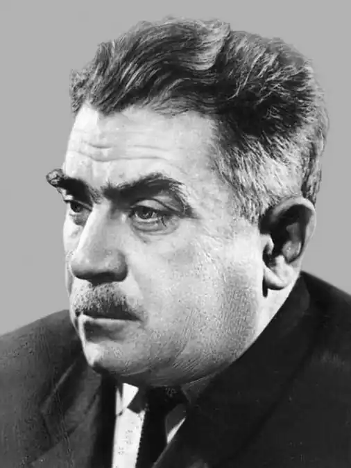
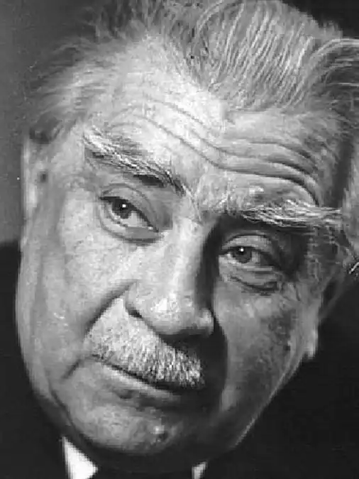
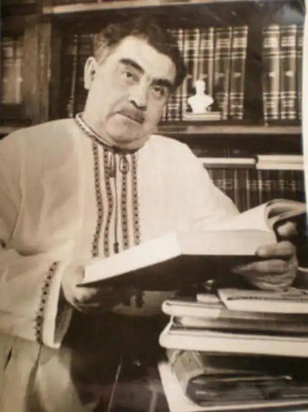

4 червня 1909 року народився Олександр Ільченко – український письменник, сценарист, журналіст. Дитинство Олександра Єлисейовича минало на околиці Харкова. Батьки були залізничниками, десятиліттями у них працювали наймані робітники. Жили у достатку, тому безтурботні роки малечі минали у піснях, казках, легендах, народній ліриці й гуморі.
Навчаючись у семирічній гімназії, Олександр почав підпрацьовувати у друкарні видавничим коректором. Там він від руки адаптовував твори Івана Франка, Лесі Українки та інших класиків під новоприйнятий правопис. Далі освіту здобував у Харківському інституті народної освіти. Паралельно працював у редакціях дитячих видань: "Червоні квіти", "Знання та праця", "Весела бригада".
У 1937 році батька Олександра, Єлисея Матвійовича, за доносом заарештували і засудили за націоналізм. Заслали до Сибіру, де він помер через чотири роки від голоду. Стараннями Олександра батька реабілітували посмертно, та це сталося лише у 1958 році. У 1939 році Олександр переїхав до Києва і став до праці у Дитячому видавництві. Під час Другої світової жив у Ташкенті. Там він активно видавався – всього за рік видав шість книг, у яких були повісті, нариси і публіцистика. Познайомився із дівчиною на ім'я Рая, яка у майбутньому стане його дружиною і народить йому трьох донечок. Сам Олександр жартував: "У мене три дочки – і всі на "ф": філолог, фізик і "фімік". У 43-му перебрався працювати до Москви, бо українські території були ще окуповані нацистами. Лише наприкінці року він зміг повернутися на Батьківщину, де і прожив до своєї смерти. В ті роки визріла думка про написання "Мамая". У 1945-му він подав заявку на казково-героїчну кінокомедію "Козак Мамай", довго чекав відповіді, але так і не отримав її. У 1946 році рано-вранці за Олександром приїхали на автомобілі і забрали. Додому він повернувся пізно ввечері. Після цього добу не вставав із ліжка, не розмовляв, не їв. Лише через день піднявся і подзвонив у ЦК. Як з'ясувалося пізніше, він дав згоду на написання кіносценарію за мотивами "Петербурзької осені". Сценарій про останню осінь Шевченка безліч разів змушували переробити, десятки разів відправляли на переузгодження і нарешті затвердили у Москві. Та вже через рік поміняли режисера. Ним став Ігор Савченко, який вирішив розширити хронологію, розтягнувши її на 15 років. Ільченко обурився, бо це порушення історичної правди. І почалося. Савченко зумів переконати комісію, що він захищає твір від Ільченко, а той, своєю чергою, їздив до Ленінграда в архіви, шукаючи достеменні відомості. Сценарій завершили, комісія затвердила його, Ільченко усунули від подальшої роботи, а потім взагалі зняли ім'я з титрів. Коли у 1952 році стрічка отримала Сталінську премію, Олександр був розбитий. Не раз і не два були перевидані повісті "Звичайний хлопець", "Рукавичка" та роман "Козацькому роду нема переводу, або ж Мамай та чужа молодиця" та інші. Але доля була прихильною не до всіх творів Ільченка. Повість "Єрмак і Арсеній", яку автор присвятив Фрунзе, вилучили спецслужби на початку Другої світової. Відшукати її так ніколи і не вдалося. У березні 1961 року на екрани вийшов кінофільм "Роман і Франческа", який мав успіх у глядача. Сценарист – Олександр Ільченко, режисер-постановник Володимир Денисенко, автор пісень Дмитро Павличко, композитор Олександр Білаш. Головні ролі виконували Павло Морозенко і Людмила Гурченко, яка зіграла Франческу. По життю Олександр Ільченко – активіст. Він був і у керівництві товариства дружби з Італією, і очільником комісії Спілки письменників. А ще в усьому любив точність і пунктуальність. Його друг, Михайло Стельмах, і той на гостини приходив вчасно, адже знав, що якщо спізниться бодай на хвилину, все – розмови не буде. Переклав рідною мовою низку творів Максима Горького, Олександра Островського, Аркадія Гайдара, Івана Буніна, Олексія Толстого та інших. Як публіцист виступав в обороні українського слова. Дуже трепетно, з повагою і любов'ю ставився до української мови. Помер Олександр Ільченко 16 вересня 1994 року. Свій останній спочинок знайшов на Байковому кладовищі. На могильній плиті – бронзовий Мамай, а нижче – автограф Олександра Єлисейовича.